Conferencia "Color" · Sara Viloria
Reflexiones, aprendizajes y momentos de una charla sobre teoría del color, Pantone y semiología visual.
Aprendizajes obtenidos
Entendí que el color no es solo decoración: tiene una estructura, una lógica y se puede analizar igual que cualquier otro sistema de diseño.
I understood that color is not merely decoration; it has a structure and a logic, and can be analyzed like any other design system.
Aprendí que Pantone existe para que el color se pueda comunicar exactamente igual en cualquier parte del mundo, evitando ambigüedades.
I learned that Pantone exists so that colors can be communicated exactly the same way anywhere in the world, avoiding ambiguity.
Me di cuenta de que escoger una paleta de colores para una página web es, básicamente, el mismo ejercicio que hace un colorista para una marca.
I realized that choosing a color palette for a website is basically the same exercise a brand colorist performs.
La charla me dejó claro que cada color que se usa en una interfaz debería tener una razón, no ser solo "lo que se ve bonito".
The talk made it clear that every color used in an interface should have a reason, rather than just 'looking nice.
Reflexión personal
Ir a esta charla me hizo ver que el diseño de software y el diseño de moda no están tan separados como parecen. Los dos parten de entender a quién le estás hablando y qué quieres que sienta esa persona cuando ve tu trabajo. Como desarrolladora, normalmente pienso en colores solo como "variables CSS", pero después de esta conferencia empecé a pensar en ellos como decisiones con significado.
También me quedó la reflexión de que estos espacios —que parecen alejados de la programación— en realidad fortalecen mucho mi formación, porque me obligan a pensar en la experiencia de usuario desde un lugar distinto al que estoy acostumbrada.
Attending this talk made me realize that software design and fashion design aren't as distant as they seem. Both begin with understanding who your audience is and what you want them to feel when they see your work. As a developer, I usually think of colors simply as "CSS variables," but after this conference, I've begun to see them as meaningful decisions.
I'm also left with the feeling that these spaces, although they seem far removed from programming, actually contribute greatly to my professional growth because they encourage me to think about user experience from a completely fresh perspective.
Contenido multimedia
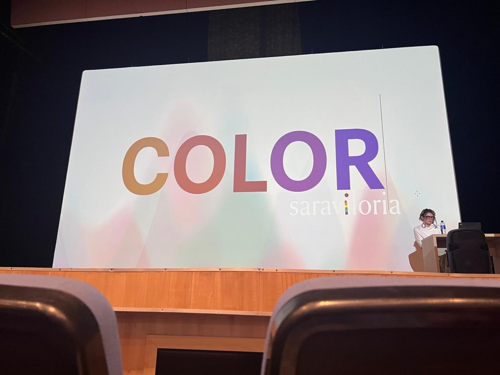
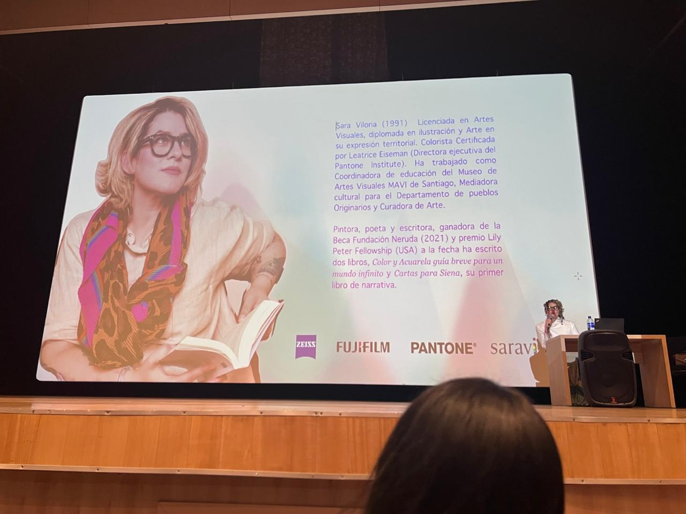
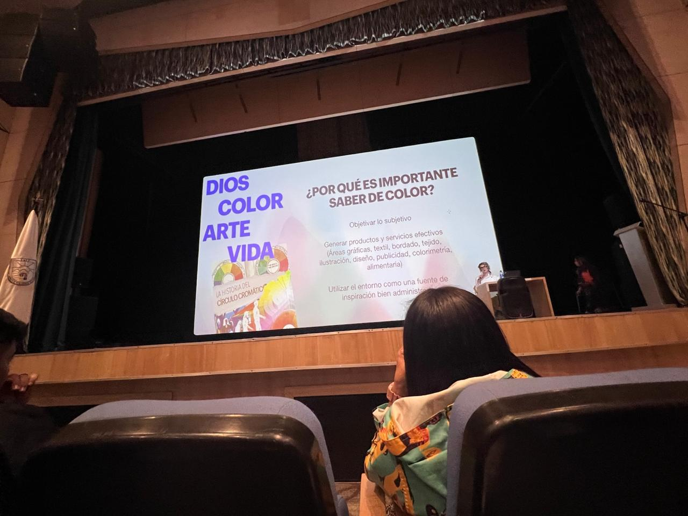
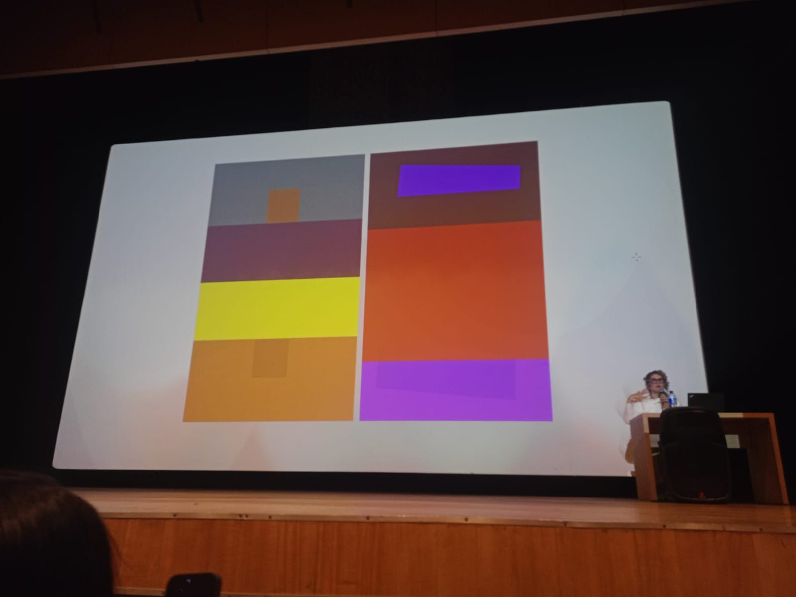
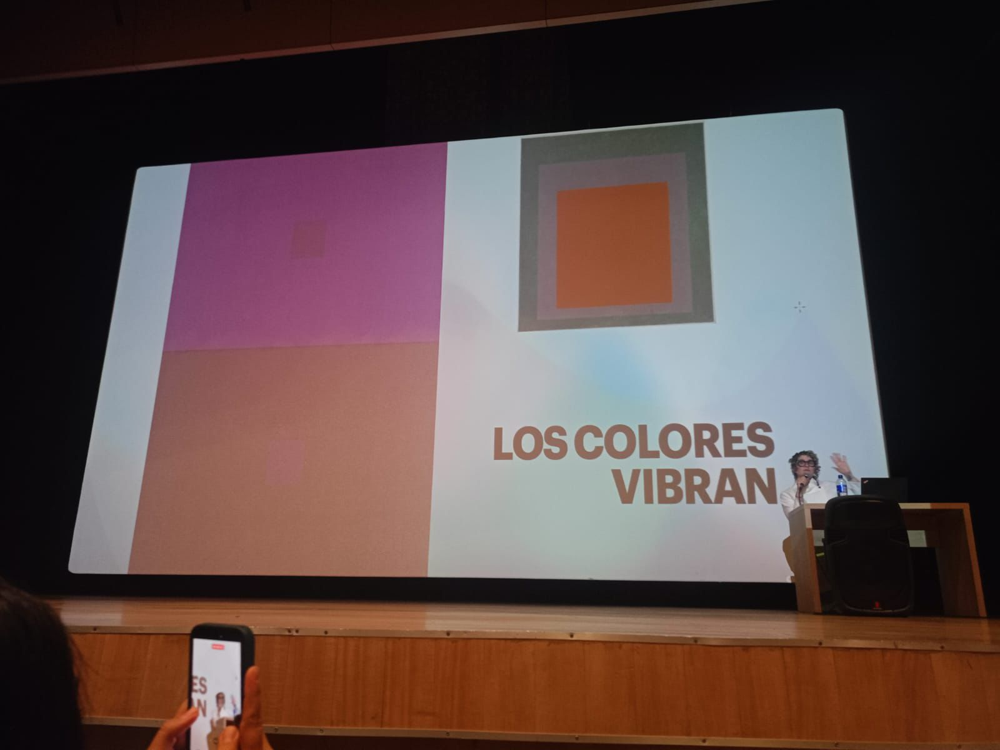
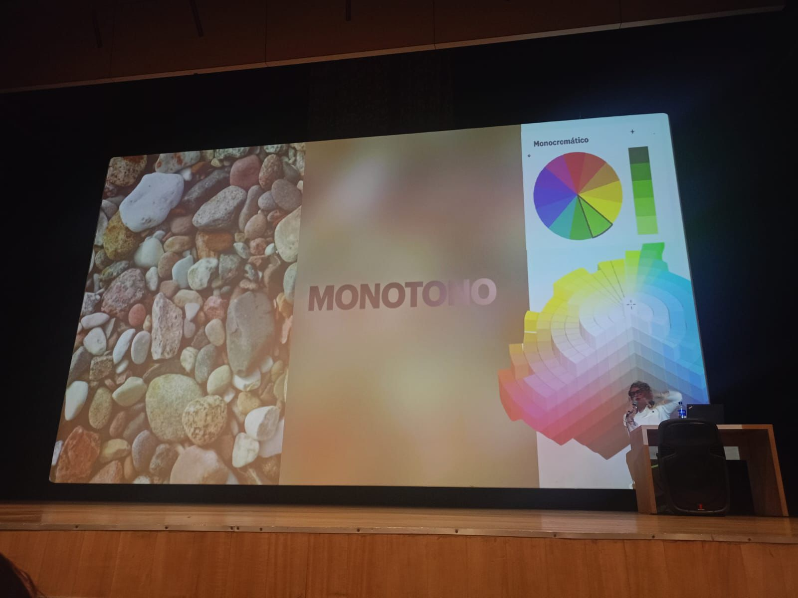
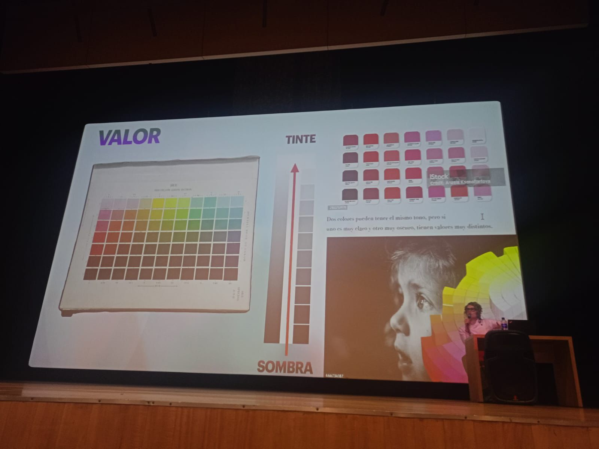
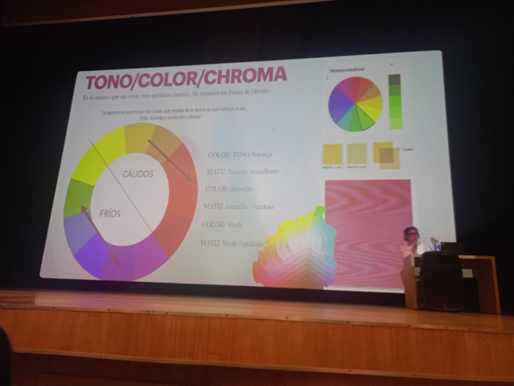
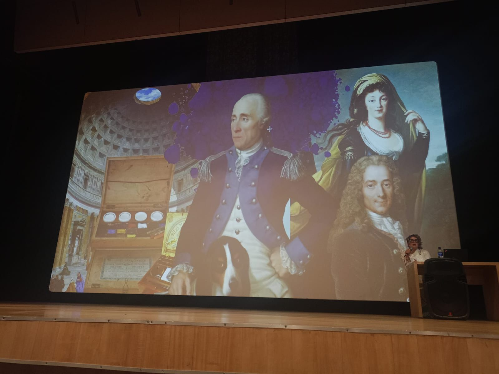
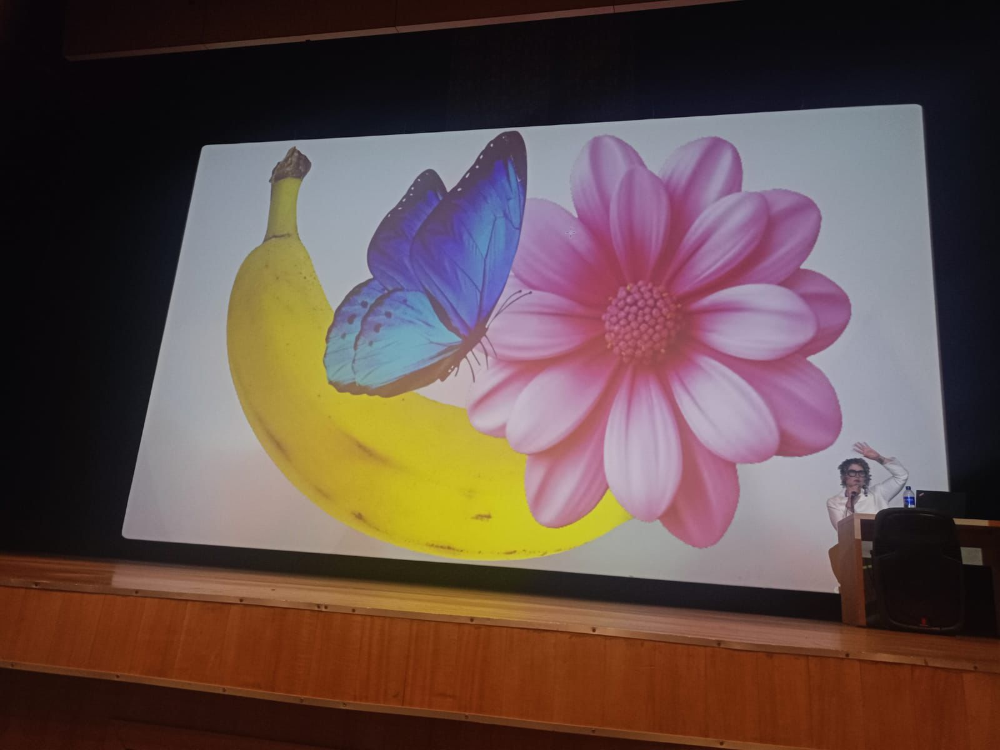
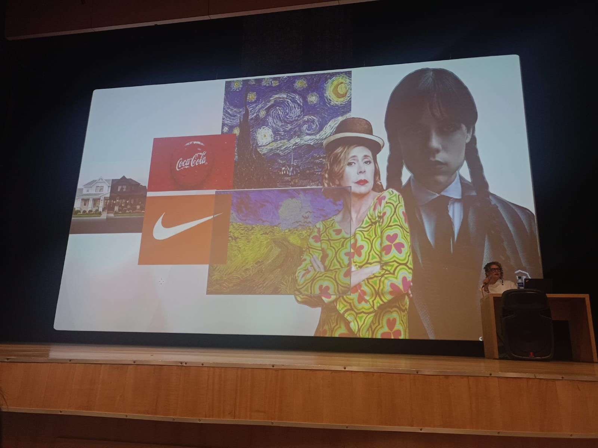